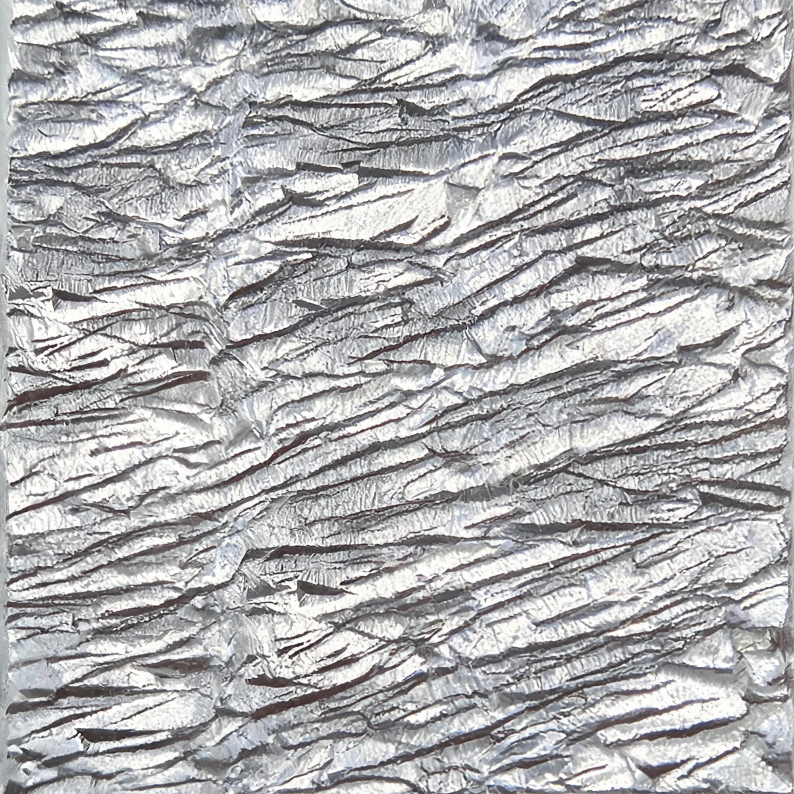
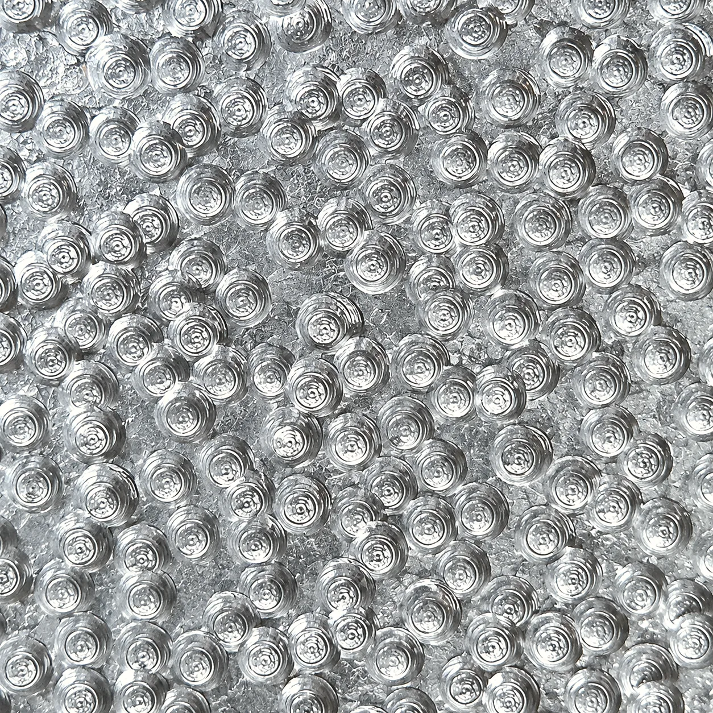
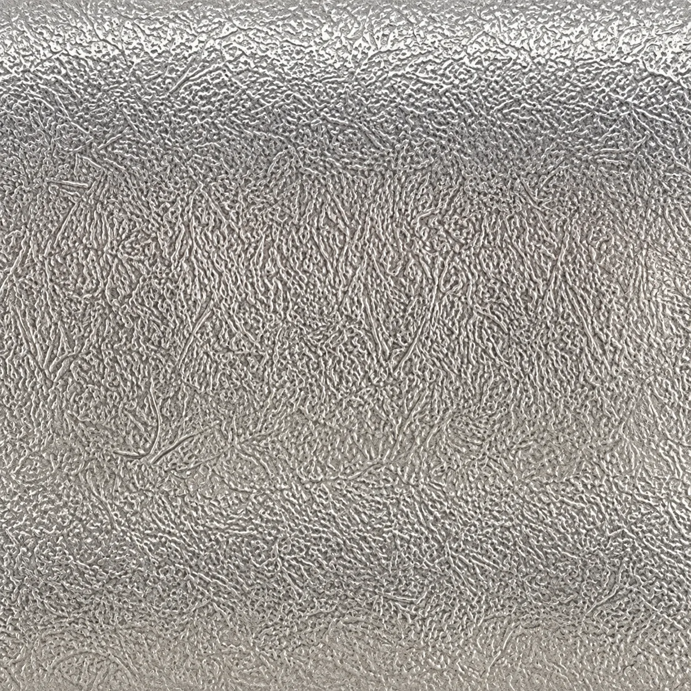
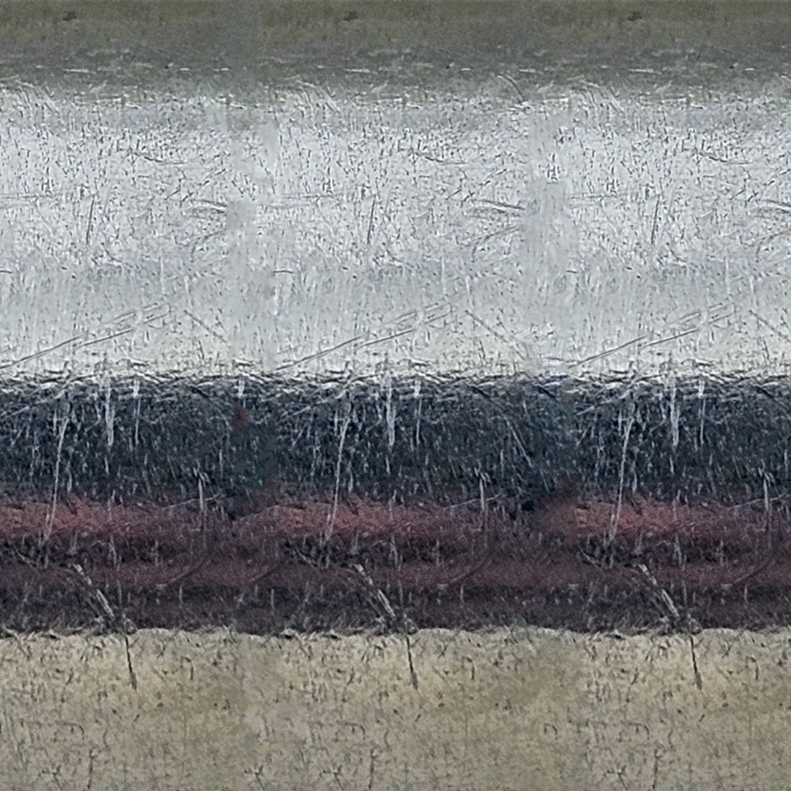
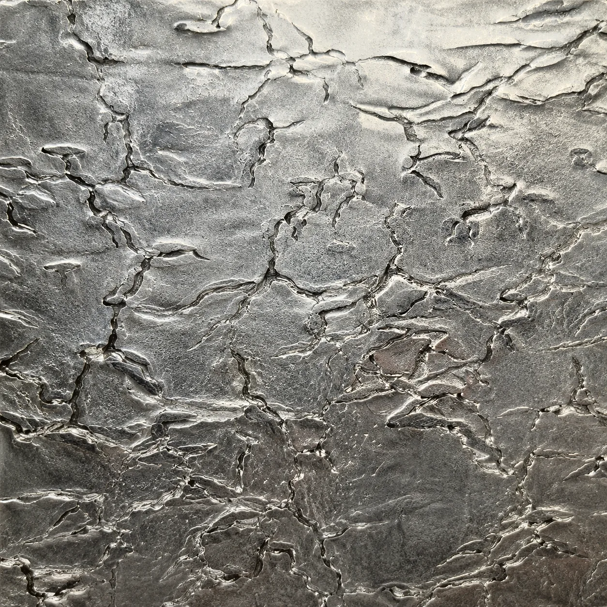

CircuitCurios · Aluminium · Handarbeit
Oberflächen.
Druck, Bruch, Abrieb und organische Formen werden direkt ins Material gearbeitet. Die Oberfläche ist kein Finish. Sie ist die Identität des Stücks.

01 — Oberflächenarchiv
Spuren im Material.
Keine aufgedruckten Muster. Jede Struktur entsteht direkt am Aluminium und verändert sich mit Form, Licht und Blickwinkel.





Material statt Dekoration
Nicht aufgemalt.
eingearbeitet.